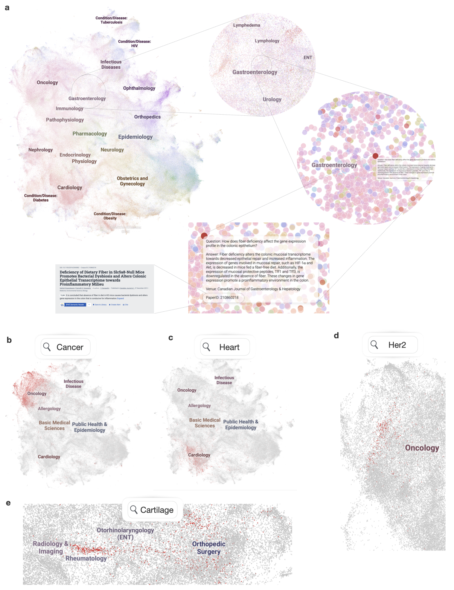

How is MIRIAD created?

Faithful reasoning in medical vision–language models (VLMs) requires not only accurate predictions but also transparent alignment between textual rationales and visual evidence. While Chain-of-Thought (CoT) prompting has shown promise in medical visual question answering (VQA), no large-scale expert-level dataset has captured stepwise reasoning with precise visual grounding. We introduce S-Chain, the first large-scale dataset of 12,000 expert-annotated medical images with bounding-boxes and structured visual CoT (SV-CoT), explicitly linking visual regions to reasoning steps. The dataset further supports 16 languages, totaling over 700k VQA pairs for broad multilingual applicability.
Using S-Chain, we benchmark state-of-the-art medical VLMs (ExGra-Med, LLaVA-Med) and general-purpose VLMs (Qwen2.5-VL, InternVL2.5), showing that SV-CoT supervision significantly improves interpretability, grounding fidelity, and robustness. Beyond benchmarking, we study its synergy with retrieval-augmented generation, revealing how domain knowledge and visual grounding interact during autoregressive reasoning. Finally, we propose a new mechanism that strengthens the alignment between visual evidence and reasoning, improving both reliability and efficiency. S-Chain establishes a new benchmark for grounded medical reasoning and paves the way toward more trustworthy and explainable medical VLMs.
For both AI practitioners and clinical professionals, MIRIAD enables a range of down-stream use cases, including serving as a structured corpus of external knowledge for retrieval augmented generation (RAG) applications for more effective retrieval; a supervised dataset for training medical information retrievers, which contains millions of query-response pairs and metadata of information source; as well as advanced interfaces for users to visually explore, search, and navigate a structured landscape of medical queries and responses, with clickable follow-up literature.
Check out the interactive demo.

@misc{zheng2025miriadaugmentingllmsmillions,
title={MIRIAD: Augmenting LLMs with millions of medical query-response pairs},
author={Qinyue Zheng and Salman Abdullah and Sam Rawal and Cyril Zakka and Sophie Ostmeier and Maximilian Purk and Eduardo Reis and Eric J. Topol and Jure Leskovec and Michael Moor},
year={2025},
eprint={2506.06091},
archivePrefix={arXiv},
primaryClass={cs.CL},
url={https://arxiv.org/abs/2506.06091},
}